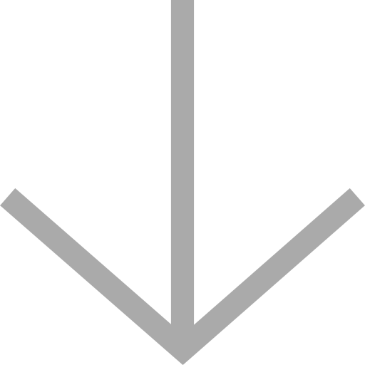

<div class="_v-container"
     id="{{ containerId }}"
     ng-touchstart="touchStart($event)"
     ng-touchmove="touchMove($event)"
     ng-touchend="touchEnd($event)"
  >

  <div class="_v-content" id="{{ contentId }}">
    <div ng-if="onRefresh" class="pull-to-refresh-layer"
         ng-class="{'active': state == 1, 'active refreshing': state == 2}">
        <span class="spinner-holder">
          
          <span class="text" ng-if="state != 2">{{ refreshText }}</span>
          <spinner class="spinner" ng-if="state == 2"></spinner>
        </span>
    </div>

    <div ng-transclude></div>

    <div ng-if="onInfinite" class="loading-layer" ng-class="{'active': showLoading}">
        <span class="spinner-holder">
          <spinner class="spinner"></spinner>
        </span>
    </div>
  </div>
</div>